Hi, I'm
a multidisciplinary designer and builder passionate about creating at the
intersection of technology, people, and storytelling with AI.
Currently completing dual degrees in Computer Science and Business
Administration: Marketing at San Francisco State University — designing,
coding, and shipping things that matter along the way.
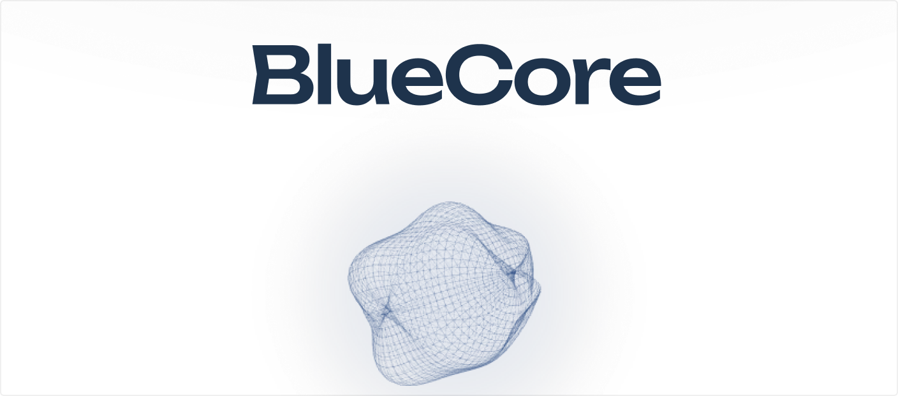
Bringing wellbeing infrastructure to the world's most isolated workforce — through AI, quiet documentation, and design built around the people the industry forgot. Eight months of field research across two continents, still iterating with the people it's built for.
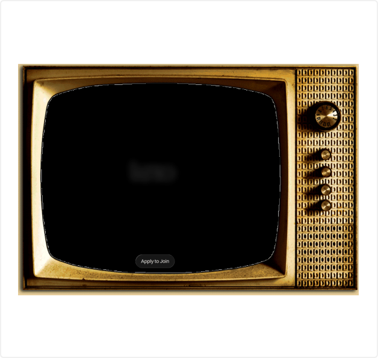
A collection of content, marketing materials, and graphics for a Series A AI-matchmaking startup — prelaunch.
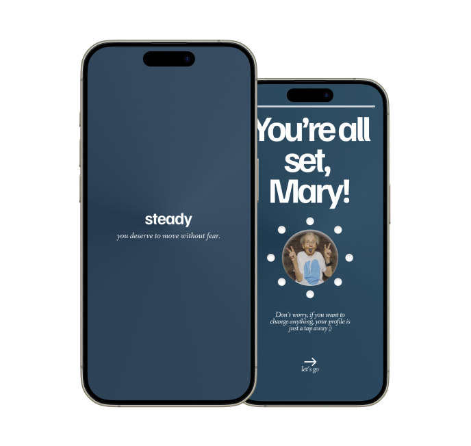
Making stability accessible for aging adults through passive sensing, personalized insights, and quiet, dignified design.
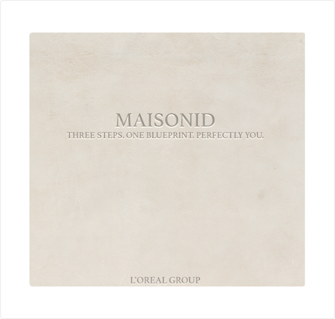
A biologically guided fragrance ritual for L'Oréal Luxe, where skin chemistry replaces guesswork and refill becomes identity.
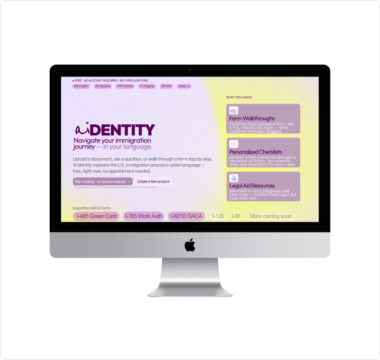
Reimagining how immigrant families access legal guidance — through AI, plain language, and tools built for the communities attorneys can't reach.
hci research
Human-computer interaction research on accessible interfaces for older adults — usability studies, prototyping, and design recommendations.
Researchergatoraid
Reimagining fatigue management to be proactive, private, and protective for industrial workers — real-time monitoring meets quiet, dignified design.
Backend Engineer
I grew up in the kitchen of Emporium Thai in Los Angeles — my Thai-Chinese
immigrant parent's restaurant, and by our very unbiased opinion, the best Thai
restaurant in the world. Between tables 4 and 9 is where I practiced my
competitive dance numbers, and swim practice was a 15-minute walk away four
times a week. That upbringing — between cultures, languages, and creative
worlds — taught me to move fluidly between things, which probably explains why
I've never been able to stay in just one lane.
I consider myself a creative at heart. It's how I think, communicate, and make
sense of the world. I studied abroad in Madrid and Seoul, and am soon graduating
with dual degrees in Computer Science and Marketing from San Francisco State
University — somewhere along the way falling deep into the overlap between
technology, design, and people.
Researching and designing at SUGAR Network — across San Francisco and Paris.
Wrapping up my final projects before I walk across that stage at San Francisco State University (ahhh!)
Somewhere between my 500th job application and a full night's sleep 🤞
Romanticizing it all — with a side of dance break — on TikTok
For more details, checkout my LinkedIn
I love working with and learning from people who are deeply passionate about
what they make — and San Francisco has not disappointed. Always feel free to
reach out — for projects, collabs, cool ideas, or just coffee
K☆
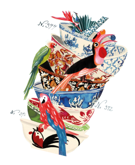
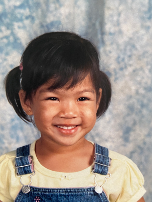
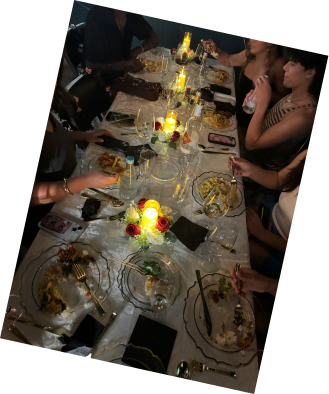
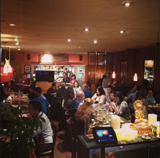
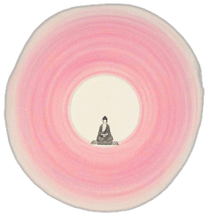
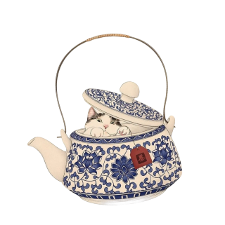
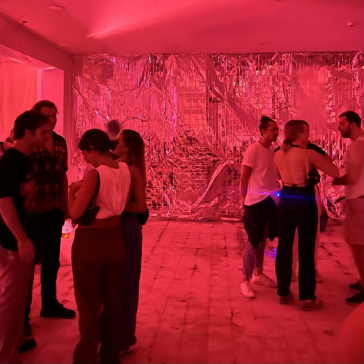
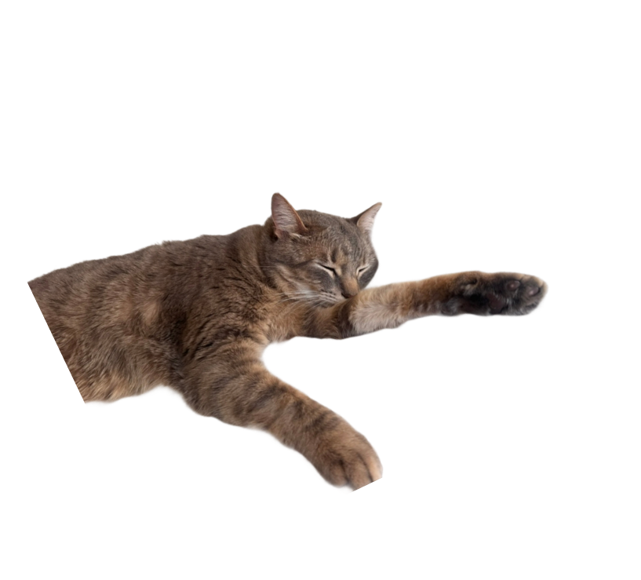
I'm always open to new projects, collaborations, and conversations. Whether you have a question or just want to say hi — my inbox is always open.